The WorldWideWeb (not to be confused with the World Wide Web) was the first browser ever created by W3C Director Tim Berners-Lee, then renamed Nexus to differentiate from the actual World Wide Web. Unlike today, this was the only browser and the only way to access the web.
1990
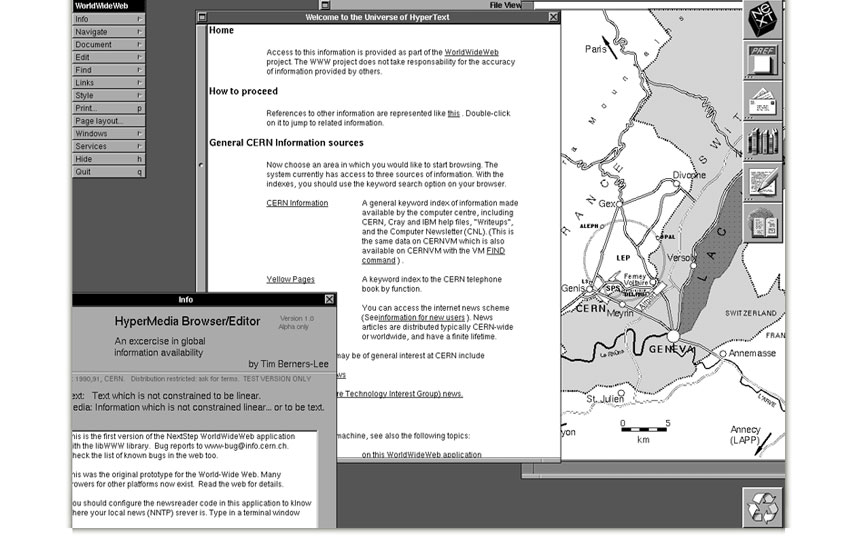
1992
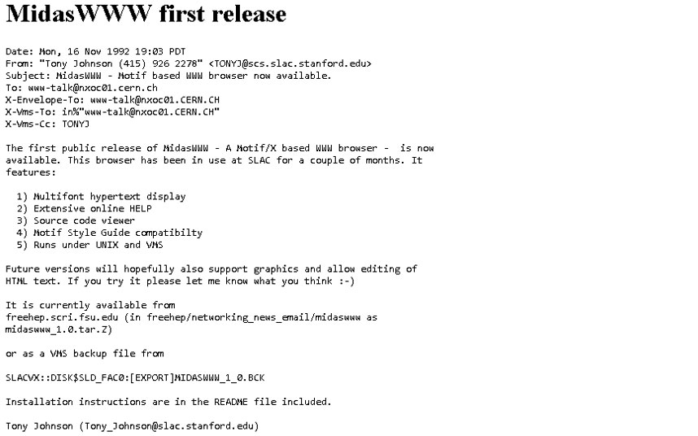
MidasWWW was developed by Tony Johnson and Chung Huynh at the Standford Linear Accelerator Centre. It ran under Unix and VMS.
1993
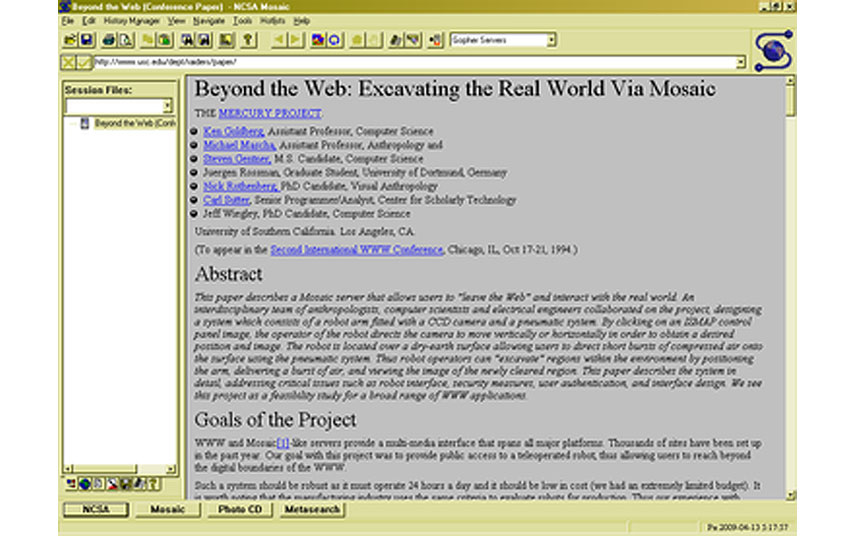
Mosaic browser was named for its support of multiple internet protocols. Its intuitive interface, reliability, Microsoft Windows port and simple installation all contributed to its popularity within the web. Mosaic was also the first browser to display images inline with text instead of displaying images in a separate window.
1994

Netscape Navigator was inspired by the success of the Mosaic web browser, which was co-written by Marc Andreessen. An important innovation that Netscape introduced was the on-the-fly display of web pages, where text and graphics appeared on the screen as the web page downloaded.
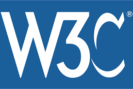
The World Wide Web Consortium (W3C) was founded by Tim Berners-Lee. This is standards organization for the web, which has a set of guidelines for browsers to adhere certain to HTML and DOM specifications. Because it’s not a strict set of rules, they can be interpreted differently by different rendering engines. This is largely why you see discrepancies in browser experiences. Browsers can conform the specification while still abiding by their own rules, which can cause compatibility issues.
As browser versions update, many will add in other areas or features not specified in the W3C. Whether this be for competitive advantage or just because of a grey area in the guidelines, it can create cross-browser issues for software teams.
The rendering engine is responsible for interpreting and displaying content. Since the rendering engines of browsers are different, the content behaves different ways. Sometimes these differences are slight, while sometimes they’re major and can even make a web page unusable.
For example, Safari uses WebKit. Meanwhile, Chrome and Opera are both using Blink. Firefox uses Gecko and IE are using Trident. This means that each of these browsers abide by their own rules when it comes to rendering and displaying a web page, which can be a huge pain for developers trying to create a consistent experience.
1995
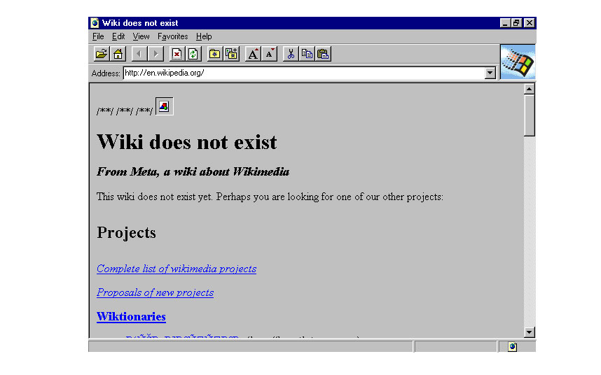
Internet Explorer made its debut as Microsoft’s first web browser. It was a reworked version of Spyglass Mosaic, which Microsoft licensed from Spyglass Inc., like many other companies initiating browser development. It was first released as part of the add-on package Plus! for Windows 95 that year. Later versions were available as free downloads, or in service packs, and included in the OEM service releases of Windows 95 and later versions of Windows.
First Browser War
A browser war is competition for dominance in the usage share of web browsers. The most popular web browser was Netscape Navigator and when Microsoft’s browser appeared, Navigator had a market share of around 85%.
Although Windows users had to buy Internet Explorer 1.0 as part of the Windows 95 Plus! pack, subsequent versions were made available as a free download, while Netscape Navigator cost $49. In short, Microsoft was giving away Internet Explorer to gain market share — something no other company could afford to do at the time.
Microsoft’s tactical superiority over the competition — it also made the most popular computer operating system in the world — also meant it could ‘persuade’ PC manufacturers to include Internet Explorer with their new models instead of Netscape Navigator. That meant almost every new PC had an Internet Explorer icon on the Desktop as soon as it was switched on — and that meant users didn’t have to worry about downloading anything else.
1996
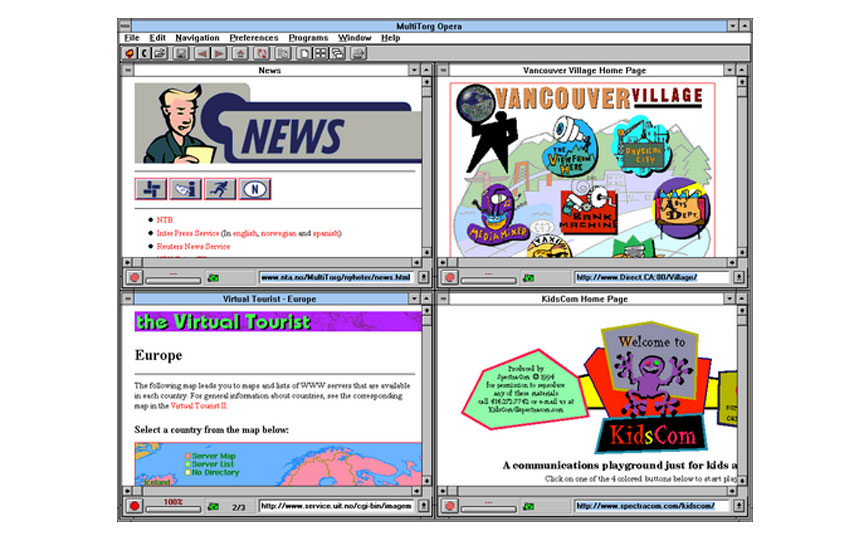
Opera started as a research project in 1994 that finally went public two years later. This was also arguably the beginning of the browser wars, mainly between IE 3 and Navigator 3 as Internet Explorer inched ahead with new capabilities.
2001
The First Browser War ending
The first browser war ended with Internet Explorer having no remaining serious competition for its market share. This also brought an end to the rapid innovation in web browsers; until 2006 there was only one new version of Internet Explorer since version 6.0 had been released in 2001.
2003
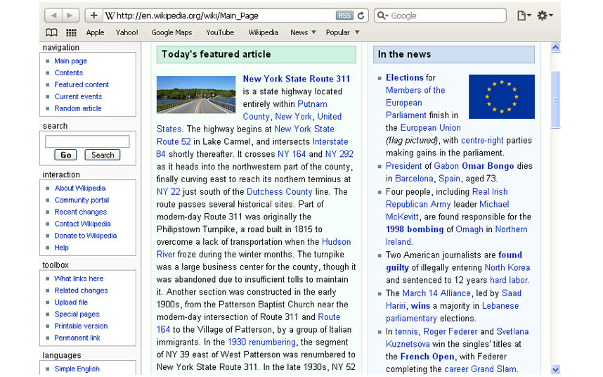
In San Francisco Steve Jobs announced that Apple had developed their own web browser, called Safari. Safari, in a broader sense, means exploring the wild, especially on the African land. Hence Steve Jobs have connected the name ‘Safari’ as a means to navigate or explore the web.
2004
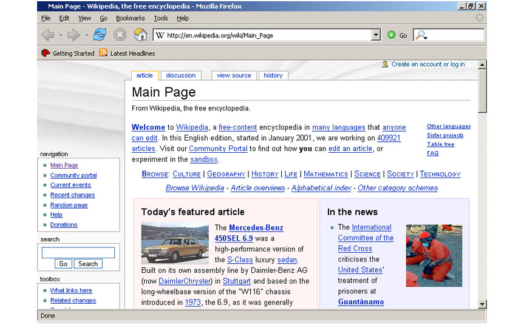
Mozilla launched Firefox. The name was first established as a branding for the “mosaic killer”.
Second Browser War
Netscape Navigator was still around by this point, but it was no longer a force to be reckoned with. However, its source code had long since been released as open source and Mozilla 1.0 was launched in 2002. Over 90 percent of web users were with Internet Explorer by now, but since not everyone was happy with Internet Explorer, some started to switch to this alternative.
Mozilla soon evolved into the Phoenix web browser, which was then renamed to Firebird and then, in 2004, renamed again to Firefox. Since it was open source software, Mozilla (in all its forms) was free to download and use and a little-known commercial browser called Opera also became free around this time.
By the time Microsoft released Internet Explorer 7 in 2006, it was playing catch up to features already found in the increasingly popular Firefox (as it was then known) and Opera, and uptake was slow. Google raised the bar still higher in 2008 with its super-fast Chrome browser and it quickly found favour, gaining a 3.6 percent market share in little under a year.
But it was Firefox that was winning fans the fastest. By 2009, one report reckoned that it was the most popular web browser worldwide, when compared to individual versions of other browsers. In other words, while Internet Explorer was still by far the most popular web browser, Microsoft appeared to be losing the war.
2007
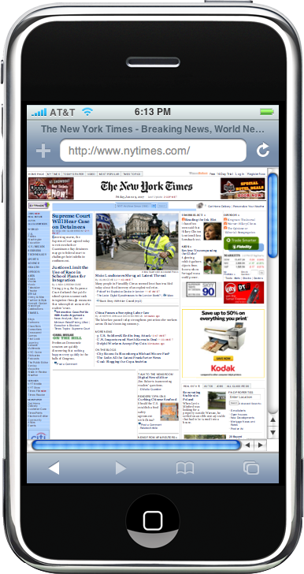
Mobile Safari was introduced as Apple’s mobile web browser and continues to dominate the iOS market. It famously has never supported the Flash plugin, but it was the first mobile web browser that felt nearly as capable and powerful as a full desktop browser. Where other mobile operating systems reflowed, reformatted, or simply broke the look and feel of web pages, mobile Safari presented the web fully and offered simple zoom and scrolling features that were unmatched at the time.
2008
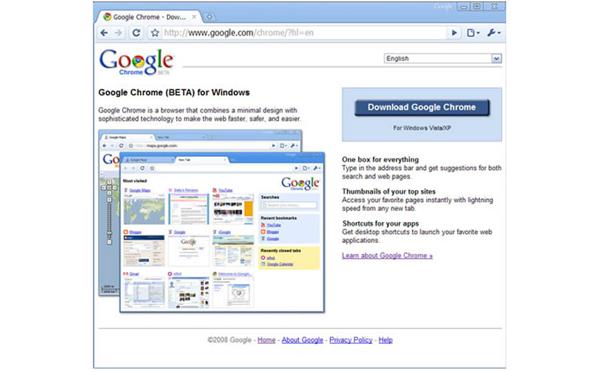
Google co-founders Sergey Brin and Larry Page hired several Mozilla Firefox developers and released their own web browser Google Chrome (commonly known simply as Chrome). It was first released for Microsoft Windows, and was later ported to Linux, macOS, iOS, and Android.
2011
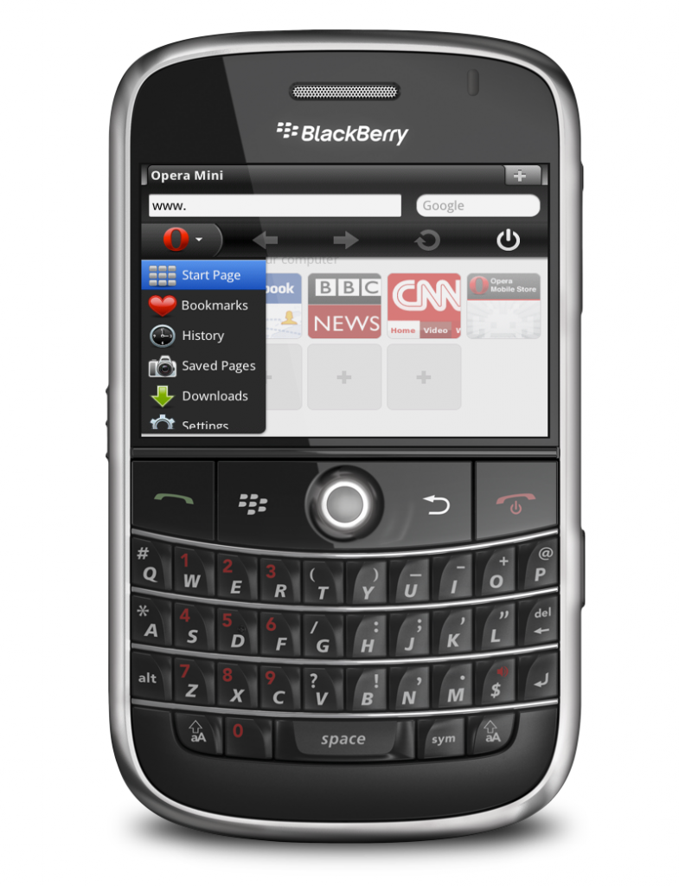
Opera Mini was released to focus on the fast-growing mobile browser market. It was developed by the Opera Software company.
2015
2018
Third Browser War
On January 23, 2018 Google launched Chrome 64 and Mozilla released Firefox 58 in the span of a day. The competition between the browsers across different devices renewed, and was termed as the start of a new browser war. By this time Microsoft had shifted from Internet Explorer as its representative web browser to Microsoft Edge, first released in 2015 with Windows 10. However the new browser failed to capture much popularity as of 2018. As of December 2018, combining all types of devices using the internet, Google Chrome remains the most used browser across the world by a wide margin.
Today, Chrome still rules desktop browsers while Safari owns the mobile browsing market. However, there still is no defined winner. The browser wars are still going strong and fragmentation is a more prevalent issue than ever due to the frequent updates and releases of different browser versions and operating systems. Browsers preferences are also largely dependant on demographics including age, country, and even job. For example, many schools and companies have certain requirements about what devices, operating systems, and browsers users may access and don’t permit individuals to update on their own.
Additionally, as browsers continually update versions hoping to be the next Google Chrome, there’s no saying when one will finally surpass its popularity or when another company creates their own browser to enter the mix. In fact, with Firefox’s recent Quantum version, more and more users and considering making the switch in favor of a faster browsing experience.
Not to mention, the underdog browsers still capture a distinct user base. While something like UC Browser might not capture a large percentage of the internet in comparison to the big five, it still serves about 500 million people.